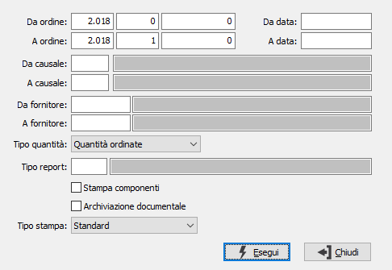

Stampa ordini
Il programma attiva la stampa differita o la ristampa dell’ordine, sulla base dei parametri di selezione inseriti dall’utente.
E’ possibile determinare la stampa completa degli ordini selezionati, oppure la stampa dei soli prodotti da spedire o la stampa dei prodotti da rientrare.

DA ORDINE: tre campi per contenere rispettivamente anno, serie sezionale e numero del documento da cui si vuole iniziare la selezione. Confermando a vuoto, la selezione inizia dal primo documento compatibile con i successivi parametri.
A ORDINE: tre campi per contenere rispettivamente anno, serie sezionale e numero del documento con cui si vuole concludere la selezione. Confermando a vuoto, la selezione termina con l’ultimo documento compatibile con i successivi parametri.
DA CAUSALE: codice della causale documento da cui si vuole iniziare la selezione. Confermando a vuoto, la selezione inizia dalla prima causale valida. Sul campo sono attive le funzioni di ricerca (F9).
A CAUSALE: codice della causale documento con cui si vuole iniziare la selezione. Confermando a vuoto, la selezione termina all’ultima causale valida. Sul campo sono attive le funzioni di ricerca (F9).
DA FORNITORE: eventuale codice del fornitore, presente in anagrafica fornitori, da cui si vuole iniziare la selezione. Confermando a vuoto, la selezione inizia dal primo fornitore valido. Sul campo sono attive le funzioni di ricerca (F9).
A FORNITORE: eventuale codice del fornitore, presente in anagrafica fornitori, con cui si vuole terminare la selezione. Confermando a vuoto, la selezione termina con l’ultimo fornitore valido. Sul campo sono attive le funzioni di ricerca (F9).
DA DATA: data documento da cui si vuole iniziare la selezione. Confermando a vuoto, la selezione inizia dalla prima data valida.
A DATA: data documento con cui si vuole concludere la selezione. Confermando a vuoto, la selezione inizia dalla prima data valida.
TIPO QUANTITÀ: combo box per definire le modalità di trattamento delle righe documento e delle quantità da stampare. Valori ammessi: Quantità ordinate (stampa completa); Quantità da spedire (residuo da spedire); Quantità da rientrare (residuo da rientrare).
TIPO REPORT: consente di specificare un tipo di report specifico per stampare solo i documenti che hanno sulla causale il tipo report inserito. Sul campo sono attive le funzioni di ricerca (F9).
STAMPA COMPONENTI: check box per stampare dopo ogni rigo i componenti del singolo prodotto/fase (casella con segno di spunta).
ARCHIVIAZIONE DOCUMENTALE: Il campo è presente solo se installato il modulo di archiviazione; definisce se i documenti devono essere stampati per essere archiviati.
TIPO STAMPA: Il campo è presente solo se installato il modulo di invio documenti per eMail/Fax; definisce come devono essere stampati i documenti in presenza di invio massimo via email/fax. Valori ammessi:
Standard: vengono stampate tutte le copie previste in anagrafica ad eccezione della copia destinata all'invio per email/fax;
Invio email/fax (non inviati): viene inviata la copia prevista secondo quando stabilito in anagrafica recapiti email/fax per tutti i documenti non ancora spediti (cioè non presenti nel file registro email/fax);
Stampa tutte le copie: vengono stampate tutte le copie previste in anagrafica (anche la copia destinata all'invio per email/fax);
Invio email/fax (sempre): viene inviata la copia prevista secondo quando stabilito in anagrafica recapiti email/fax per tutti i documenti (compresi quelli già spediti);